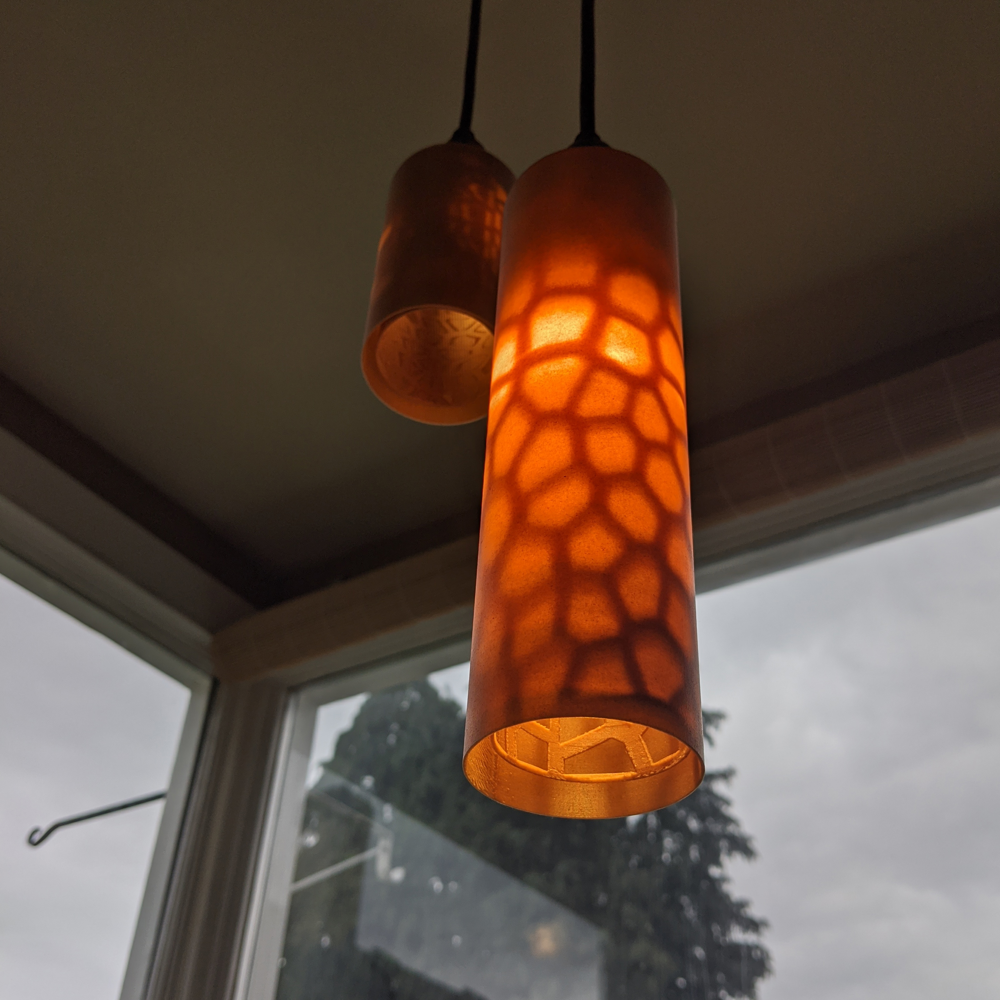
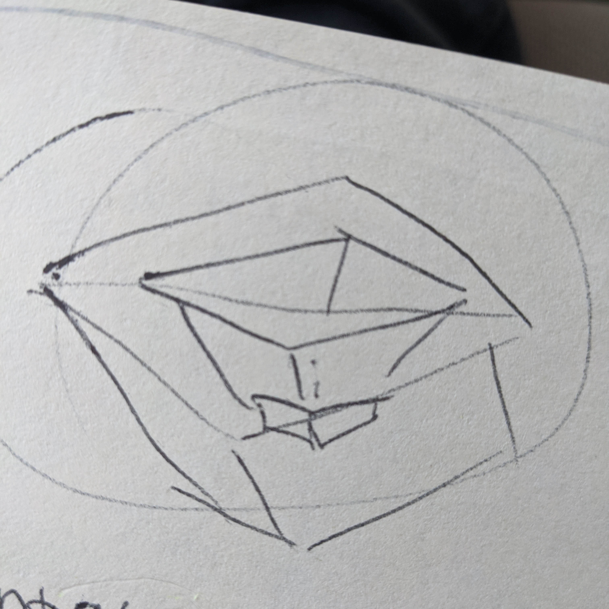

This week I continued work on my lamp and began designing a mold. I had a blast working on the lamp! You can read more about how I built it below and find files related to the lamp here .
While digging into how to create repeated geometric forms I found a super helpful tutorial for making voronoi patterns in grasshopper. As a preliminary test, I made a small spiral surface with the voronoi pattern. There were some issues baking at first: it wasn’t making the holes from the voronoi cells or extruding the geometry correctly. I realized that I was scaling the voronoi cells too large- causing them to mesh into each other to create impossible shapes. After I adjusted for this, the voronoi surface baked perfectly.
I learned a good lesson after my test printed: the surface was fragile! I broke it taking it off the printer. Like a lot. I knew my next prints would need thicker walls.
Now that I had my texture, I could apply it to whatever surface I wanted. At Nadya’s suggestion, I scoped back the shape I was originally planning on and applied my voronoi surface to elegant “chime” shapes. I plan to use this project as a stepping stone for continued work in my final project (applying the voronoi pattern to more complicated geometry- with greater precision.) I printed the tests at 50% height for the sake of time. This ended up working out later because the shorter print paired nicely with the tall print. My first test print had some issues: it’s base was too thin, and the pattern’s cells were too large for my liking. The base was so flimsy- it broke off the voronoi cells, and also in half as I tried to remove it from the printer.


The second version I printed had with a thicker base with denser infill. The supports were beautiful on this print. For fun, I tried it on the lamp guts before taking out all the cells. This gave me the idea to try a nesting shade to go over the voronoi lamp


Some of the tests I wanted to print didn’t work out. I wanted to try prints with even thicker bases, as well as experiment with voronoi cells at various sizes and extruded depths. I loved working with the light and wanted to see how different textures would affect the effect it produced. HOWEVER: I ran into serious issues getting these polysurfaces to connect with the base of the lamp. My boolean unions kept failing. Upon some inspection and a few helpful tips from Josh, I learned that something in my Grasshopper definition was creating non-manifold polysurfaces when I extruded the voronoi pattern too thick. I’m still looking into this. In the meantime, this is what I landed on:


I liked the warm cast the wood infill PLA gave the light, so I designed a nesting shade to pair with the voronoi cell surface. At first I wasn’t happy with the effect- the light was too weak (you can see this in the first picture). I played a bit with what strength and size lightbulb I paired with the lamp- I found one I liked for the big lamp (second photo), but didn’t have another to pair with the little guy. Maybe I’ll order one. Here’s how they turned out:



I think ideally, I’d cover the ugly bits of the bulb with scant open voronois cells at the top of the lamp, moving to denser voronoi cells at the bottom (like a gradient). This would give me the best of both worlds: texture play and glowing warm color.
Next, I’m going to dig more into non-manifold edge issue in my GH definition and learn more about applying different geometry to surfaces. (I want a different shape for my final project.) I’d also like to learn how to applying patterns to surfaces in a gradient.
I’m really into gardening- so I decided to make a mold for cute planters. After some sketching, I landed on an asymmetrical cube (or any polygon!) design. I planned to make it in grasshopper so I could easily modify the number of surfaces and their skew.



I also sketched some of the molds and the mold-for-molds to try and wrap my head around what exactly I needed to make and how it would work.


After MANY sketches, I decided the best move would be to build my final object and work with the molds and molds-for-molds directly in Rhino.
I made a grasshopper definition that produces a symmetrical cube planter and tried several methods to modify its shape. I didn’t think it would be this tough- I feel like I’m missing some obvious solution right in front of my face. I tried:
You can see the twisted cube I made in the screen shots below, along with the symmetrical planter from grasshopper


I’m going to finish designing my “final object” and start building it’s mold… and that mold’s mold (what?) This project is making my eyes go crossed.